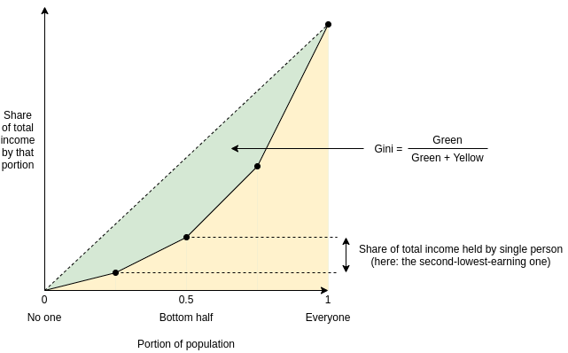
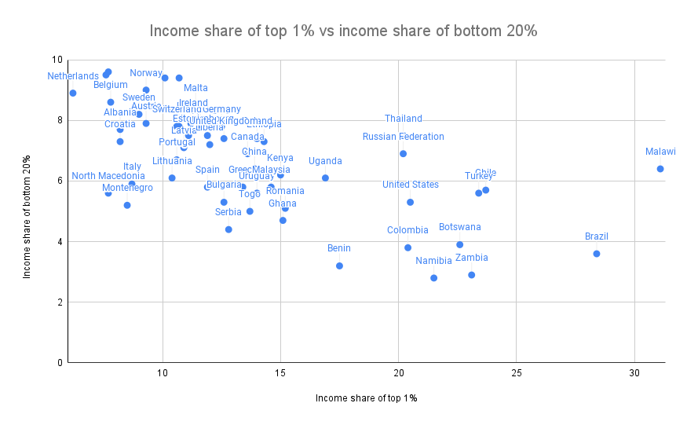
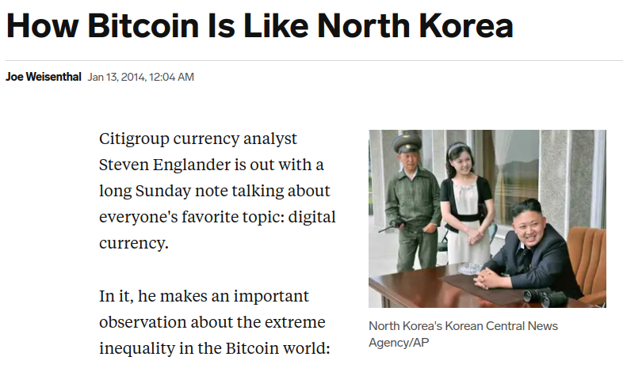
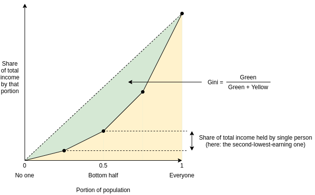
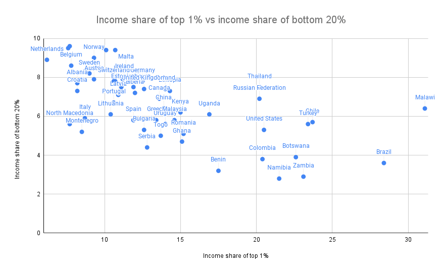
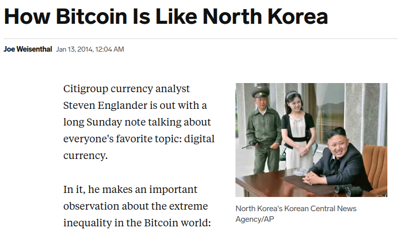

Against overuse of the Gini coefficient
2021 Jul 29
See all posts
Against overuse of the Gini coefficient
Special thanks to Barnabe Monnot and Tina Zhen for feedback and
review
The Gini
coefficient (also called the Gini index) is by far the most popular
and widely known measure of inequality, typically used to measure
inequality of income or wealth in some country, territory or other
community. It's popular because it's easy to understand, with a
mathematical definition that can easily be visualized on a graph.
However, as one might expect from any scheme that tried to reduce
inequality to a single number, the Gini coefficient also has its limits.
This is true even in its original context of measuring income and wealth
inequality in countries, but it becomes even more true when the Gini
coefficient is transplanted into other contexts (particularly:
cryptocurrency). In this post I will talk about some of the limits of
the Gini coefficient, and propose some alternatives.
What is the Gini coefficient?
The Gini
coefficient is a measure of inequality introduced by Corrado Gini in
1912. It is typically used to measure inequality of income and wealth of
countries, though it is also increasingly being used in other
contexts.
There are two equivalent definitions of the Gini coefficient:
Area-above-curve definition: draw the graph of a
function, where \(f(p)\) equals the
share of total income earned by the lowest-earning portion of the
population (eg. \(f(0.1)\) is the share
of total income earned by the lowest-earning 10%). The Gini coefficient
is the area between that curve and the \(y=x\) line, as a portion of the whole
triangle:

Average-difference definition: the Gini coefficient
is half the average difference of incomes between each all possible
pairs of individuals, divided by the mean income.
For example, in the above example chart, the four incomes are
[1, 2, 4, 8], so the 16 possible differences are
[0, 1, 3, 7, 1, 0, 2, 6, 3, 2, 0, 4, 7, 6, 4, 0]. Hence the
average difference is 2.875 and the mean income is 3.75, so Gini = \(\frac{2.875}{2 * 3.75} \approx
0.3833\).
It turns out that the two are mathematically equivalent (proving this
is an exercise to the reader)!
What's wrong with the
Gini coefficient?
The Gini coefficient is attractive because it's a reasonably simple
and easy-to-understand statistic. It might not look simple, but
trust me, pretty much everything in statistics that deals with
populations of arbitrary size is that bad, and often much worse. Here,
stare at the formula of something as basic as the standard
deviation:
\(\sigma = \frac{\sum_{i=1}^n x_i^2}{n} -
(\frac{\sum_{i=1}^n x_i}{n})^2\)
And here's the Gini:
\(G = \frac{2 * \sum_{i=1}^n i*x_i}{n *
\sum_{i=1}^n x_i} - \frac{n+1}{n}\)
It's actually quite tame, I promise!
So, what's wrong with it? Well, there are lots of things wrong with
it, and people have written
lots of articles
about various
problems with the Gini coefficient. In this article, I will focus on
one specific problem that I think is under-discussed about the Gini as a
whole, but that has particular relevance to analyzing inequality in
internet communities such as blockchains. The Gini coefficient
combines together into a single inequality index two problems that
actually look quite different: suffering due to lack of resources and
concentration of power.
To understand the difference between the two problems more clearly,
let's look at two dystopias:
- Dystopia A: half the population equally shares all
the resources, everyone else has none
- Dystopia B: one person has half of all the
resources, everyone else equally shares the remaining half
Here are the Lorenz curves (fancy charts like we saw above) for both
dystopias:

Clearly, neither of those two dystopias are good places to live.
But they are not-very-nice places to live in very different
ways. Dystopia A gives each resident a coin flip between
unthinkably horrific mass starvation if they end up on the left half on
the distribution and egalitarian harmony if they end up on the right
half. If you're Thanos, you might
actually like it! If you're not, it's worth avoiding with the strongest
force. Dystopia B, on the other hand, is Brave New World-like: everyone
has decently good lives (at least at the time when that snapshot of
everyone's resources is taken), but at the high cost of an extremely
undemocratic power structure where you'd better hope you have a good
overlord. If you're Curtis Yarvin,
you might actually like it! If you're not, it's very much worth avoiding
too.
These two problems are different enough that they're worth analyzing
and measuring separately. And this difference is not just theoretical.
Here is a chart showing share of total income earned by the bottom 20%
(a decent proxy for avoiding dystopia A) versus share of total income
earned by the top 1% (a decent proxy for being near dystopia B):

Sources: https://data.worldbank.org/indicator/SI.DST.FRST.20
(merging 2015 and 2016 data) and http://hdr.undp.org/en/indicators/186106.
The two are clearly correlated (coefficient -0.62), but very far from
perfectly correlated (the high priests of statistics apparently
consider 0.7 to be the lower threshold for being "highly
correlated", and we're even under that). There's an interesting second
dimension to the chart that can be analyzed - what's the difference
between a country where the top 1% earn 20% of the total income and the
bottom 20% earn 3% and a country where the top 1% earn 20% and the
bottom 20% earn 7%? Alas, such an exploration is best left to other
enterprising data and culture explorers with more experience than
myself.
Why
Gini is very problematic in non-geographic communities (eg.
internet/crypto communities)
Wealth concentration within the blockchain space in particular is an
important problem, and it's a problem worth measuring and understanding.
It's important for the blockchain space as a whole, as many people (and
US senate hearings) are trying to figure out to what extent crypto
is truly anti-elitist and to what extent it's just replacing old elites
with new ones. It's also important when comparing different
cryptocurrencies with each other.

Share of coins explicitly allocated to specific insiders in a
cryptocurrency's initial supply is one type of inequality. Note that the
Ethereum data is slightly wrong: the insider and foundation shares
should be 12.3% and 4.2%, not 15% and 5%.
Given the level of concern about these issues, it should be not at
all surprising that many people have tried computing Gini indices of
cryptocurrencies:
And even earlier than that, we had to deal with this
sensationalist article from 2014:

In addition to common plain methodological mistakes (often either
mixing up income vs wealth inequality, mixing up users vs accounts, or
both) that such analyses make quite frequently, there is a deep and
subtle problem with using the Gini coefficient to make these kinds of
comparisons. The problem lies in key distinction between typical
geographic communities (eg. cities, countries) and typical internet
communities (eg. blockchains):
A typical resident of a geographic community spends most of their
time and resources in that community, and so measured inequality in a
geographic community reflects inequality in total resources available to
people. But in an internet community, measured inequality can
come from two sources: (i) inequality in total resources available to
different participants, and (ii) inequality in level of
interest in participating in the community.
The average person with $15 in fiat currency is poor and is missing
out on the ability to have a good life. The average person with $15 in
cryptocurrency is a dabbler who opened up a wallet once for fun.
Inequality in level of interest is a healthy thing; every community has
its dabblers and its full-time hardcore fans with no life. So if a
cryptocurrency has a very high Gini coefficient, but it turns out that
much of this inequality comes from inequality in level of interest, then
the number points to a much less scary reality than the headlines
imply.
Cryptocurrencies, even those that turn out to be highly plutocratic,
will not turn any part of the world into anything close to dystopia A.
But badly-distributed cryptocurrencies may well look like dystopia B, a
problem compounded if coin
voting governance is
used to make protocol decisions. Hence, to detect the problems that
cryptocurrency communities worry about most, we want a metric that
captures proximity to dystopia B more specifically.
An
alternative: measuring dystopia A problems and dystopia B problems
separately
An alternative approach to measuring inequality involves directly
estimating suffering from resources being unequally distributed (that
is, "dystopia A" problems). First, start with some utility function
representing the value of having a certain amount of money. \(log(x)\) is popular, because it captures
the intuitively appealing approximation that doubling one's income is
about as useful at any level: going from $10,000 to $20,000 adds the
same utility as going from $5,000 to $10,000 or from $40,000 to
$80,000). The score is then a matter of measuring how much utility is
lost compared to if everyone just got the average income:
\(log(\frac{\sum_{i=1}^n x_i}{n}) -
\frac{\sum_{i=1}^n log(x_i)}{n}\)
The first term (log-of-average) is the utility that everyone would
have if money were perfectly redistributed, so everyone earned the
average income. The second term (average-of-log) is the average utility
in that economy today. The difference represents lost utility from
inequality, if you look narrowly at resources as something used for
personal consumption. There are other ways to define this formula, but
they end up being close to equivalent (eg. the 1969
paper by Anthony Atkinson suggested an "equally distributed
equivalent level of income" metric which, in the \(U(x) = log(x)\) case, is just a monotonic
function of the above, and the Theil L index is
perfectly mathematically equivalent to the above formula).
To measure concentration (or "dystopia B" problems), the Herfindahl-Hirschman
index is an excellent place to start, and is already used to measure
economic concentration in industries:
\(\frac{\sum_{i=1}^n x_i^2}{(\sum_{i=1}^n
x_i)^2}\)
Or for you visual learners out there:

Herfindahl-Hirschman index: green area divided by total area.
There are other alternatives to this; the Theil T index has
some similar properties though also some differences. A
simpler-and-dumber alternative is the Nakamoto coefficient: the minimum
number of participants needed to add up to more than 50% of the total.
Note that all three of these concentration indices focus heavily on what
happens near the top (and deliberately so): a large number of dabblers
with a small quantity of resources contributes little or nothing to the
index, while the act of two top participants merging can make a very big
change to the index.
For cryptocurrency communities, where concentration of resources is
one of the biggest risks to the system but where someone only having
0.00013 coins is not any kind of evidence that they're actually
starving, adopting indices like this is the obvious approach. But even
for countries, it's probably worth talking about, and measuring,
concentration of power and suffering from lack of resources more
separately.
That said, at some point we have to move beyond even these
indices. The harms from concentration are not just a function
of the size of the actors; they are also heavily dependent on the
relationships between the actors and their ability to collude with
each other. Similarly, resource allocation is network-dependent: lack of
formal resources may not be that harmful if the person lacking resources
has an informal network to tap into. But dealing with these issues is a
much harder challenge, and so we do also need the simpler tools while we
still have less data to work with.
Against overuse of the Gini coefficient
2021 Jul 29 See all postsSpecial thanks to Barnabe Monnot and Tina Zhen for feedback and review
The Gini coefficient (also called the Gini index) is by far the most popular and widely known measure of inequality, typically used to measure inequality of income or wealth in some country, territory or other community. It's popular because it's easy to understand, with a mathematical definition that can easily be visualized on a graph.
However, as one might expect from any scheme that tried to reduce inequality to a single number, the Gini coefficient also has its limits. This is true even in its original context of measuring income and wealth inequality in countries, but it becomes even more true when the Gini coefficient is transplanted into other contexts (particularly: cryptocurrency). In this post I will talk about some of the limits of the Gini coefficient, and propose some alternatives.
What is the Gini coefficient?
The Gini coefficient is a measure of inequality introduced by Corrado Gini in 1912. It is typically used to measure inequality of income and wealth of countries, though it is also increasingly being used in other contexts.
There are two equivalent definitions of the Gini coefficient:
Area-above-curve definition: draw the graph of a function, where \(f(p)\) equals the share of total income earned by the lowest-earning portion of the population (eg. \(f(0.1)\) is the share of total income earned by the lowest-earning 10%). The Gini coefficient is the area between that curve and the \(y=x\) line, as a portion of the whole triangle:

Average-difference definition: the Gini coefficient is half the average difference of incomes between each all possible pairs of individuals, divided by the mean income.
For example, in the above example chart, the four incomes are
[1, 2, 4, 8], so the 16 possible differences are[0, 1, 3, 7, 1, 0, 2, 6, 3, 2, 0, 4, 7, 6, 4, 0]. Hence the average difference is 2.875 and the mean income is 3.75, so Gini = \(\frac{2.875}{2 * 3.75} \approx 0.3833\).It turns out that the two are mathematically equivalent (proving this is an exercise to the reader)!
What's wrong with the Gini coefficient?
The Gini coefficient is attractive because it's a reasonably simple and easy-to-understand statistic. It might not look simple, but trust me, pretty much everything in statistics that deals with populations of arbitrary size is that bad, and often much worse. Here, stare at the formula of something as basic as the standard deviation:
\(\sigma = \frac{\sum_{i=1}^n x_i^2}{n} - (\frac{\sum_{i=1}^n x_i}{n})^2\)
And here's the Gini:
\(G = \frac{2 * \sum_{i=1}^n i*x_i}{n * \sum_{i=1}^n x_i} - \frac{n+1}{n}\)
It's actually quite tame, I promise!
So, what's wrong with it? Well, there are lots of things wrong with it, and people have written lots of articles about various problems with the Gini coefficient. In this article, I will focus on one specific problem that I think is under-discussed about the Gini as a whole, but that has particular relevance to analyzing inequality in internet communities such as blockchains. The Gini coefficient combines together into a single inequality index two problems that actually look quite different: suffering due to lack of resources and concentration of power.
To understand the difference between the two problems more clearly, let's look at two dystopias:
Here are the Lorenz curves (fancy charts like we saw above) for both dystopias:
Clearly, neither of those two dystopias are good places to live. But they are not-very-nice places to live in very different ways. Dystopia A gives each resident a coin flip between unthinkably horrific mass starvation if they end up on the left half on the distribution and egalitarian harmony if they end up on the right half. If you're Thanos, you might actually like it! If you're not, it's worth avoiding with the strongest force. Dystopia B, on the other hand, is Brave New World-like: everyone has decently good lives (at least at the time when that snapshot of everyone's resources is taken), but at the high cost of an extremely undemocratic power structure where you'd better hope you have a good overlord. If you're Curtis Yarvin, you might actually like it! If you're not, it's very much worth avoiding too.
These two problems are different enough that they're worth analyzing and measuring separately. And this difference is not just theoretical. Here is a chart showing share of total income earned by the bottom 20% (a decent proxy for avoiding dystopia A) versus share of total income earned by the top 1% (a decent proxy for being near dystopia B):

Sources: https://data.worldbank.org/indicator/SI.DST.FRST.20 (merging 2015 and 2016 data) and http://hdr.undp.org/en/indicators/186106.The two are clearly correlated (coefficient -0.62), but very far from perfectly correlated (the high priests of statistics apparently consider 0.7 to be the lower threshold for being "highly correlated", and we're even under that). There's an interesting second dimension to the chart that can be analyzed - what's the difference between a country where the top 1% earn 20% of the total income and the bottom 20% earn 3% and a country where the top 1% earn 20% and the bottom 20% earn 7%? Alas, such an exploration is best left to other enterprising data and culture explorers with more experience than myself.
Why Gini is very problematic in non-geographic communities (eg. internet/crypto communities)
Wealth concentration within the blockchain space in particular is an important problem, and it's a problem worth measuring and understanding. It's important for the blockchain space as a whole, as many people (and US senate hearings) are trying to figure out to what extent crypto is truly anti-elitist and to what extent it's just replacing old elites with new ones. It's also important when comparing different cryptocurrencies with each other.

Share of coins explicitly allocated to specific insiders in a cryptocurrency's initial supply is one type of inequality. Note that the Ethereum data is slightly wrong: the insider and foundation shares should be 12.3% and 4.2%, not 15% and 5%.Given the level of concern about these issues, it should be not at all surprising that many people have tried computing Gini indices of cryptocurrencies:
And even earlier than that, we had to deal with this sensationalist article from 2014:

In addition to common plain methodological mistakes (often either mixing up income vs wealth inequality, mixing up users vs accounts, or both) that such analyses make quite frequently, there is a deep and subtle problem with using the Gini coefficient to make these kinds of comparisons. The problem lies in key distinction between typical geographic communities (eg. cities, countries) and typical internet communities (eg. blockchains):
A typical resident of a geographic community spends most of their time and resources in that community, and so measured inequality in a geographic community reflects inequality in total resources available to people. But in an internet community, measured inequality can come from two sources: (i) inequality in total resources available to different participants, and (ii) inequality in level of interest in participating in the community.
The average person with $15 in fiat currency is poor and is missing out on the ability to have a good life. The average person with $15 in cryptocurrency is a dabbler who opened up a wallet once for fun. Inequality in level of interest is a healthy thing; every community has its dabblers and its full-time hardcore fans with no life. So if a cryptocurrency has a very high Gini coefficient, but it turns out that much of this inequality comes from inequality in level of interest, then the number points to a much less scary reality than the headlines imply.
Cryptocurrencies, even those that turn out to be highly plutocratic, will not turn any part of the world into anything close to dystopia A. But badly-distributed cryptocurrencies may well look like dystopia B, a problem compounded if coin voting governance is used to make protocol decisions. Hence, to detect the problems that cryptocurrency communities worry about most, we want a metric that captures proximity to dystopia B more specifically.
An alternative: measuring dystopia A problems and dystopia B problems separately
An alternative approach to measuring inequality involves directly estimating suffering from resources being unequally distributed (that is, "dystopia A" problems). First, start with some utility function representing the value of having a certain amount of money. \(log(x)\) is popular, because it captures the intuitively appealing approximation that doubling one's income is about as useful at any level: going from $10,000 to $20,000 adds the same utility as going from $5,000 to $10,000 or from $40,000 to $80,000). The score is then a matter of measuring how much utility is lost compared to if everyone just got the average income:
\(log(\frac{\sum_{i=1}^n x_i}{n}) - \frac{\sum_{i=1}^n log(x_i)}{n}\)
The first term (log-of-average) is the utility that everyone would have if money were perfectly redistributed, so everyone earned the average income. The second term (average-of-log) is the average utility in that economy today. The difference represents lost utility from inequality, if you look narrowly at resources as something used for personal consumption. There are other ways to define this formula, but they end up being close to equivalent (eg. the 1969 paper by Anthony Atkinson suggested an "equally distributed equivalent level of income" metric which, in the \(U(x) = log(x)\) case, is just a monotonic function of the above, and the Theil L index is perfectly mathematically equivalent to the above formula).
To measure concentration (or "dystopia B" problems), the Herfindahl-Hirschman index is an excellent place to start, and is already used to measure economic concentration in industries:
\(\frac{\sum_{i=1}^n x_i^2}{(\sum_{i=1}^n x_i)^2}\)
Or for you visual learners out there:
Herfindahl-Hirschman index: green area divided by total area.
There are other alternatives to this; the Theil T index has some similar properties though also some differences. A simpler-and-dumber alternative is the Nakamoto coefficient: the minimum number of participants needed to add up to more than 50% of the total. Note that all three of these concentration indices focus heavily on what happens near the top (and deliberately so): a large number of dabblers with a small quantity of resources contributes little or nothing to the index, while the act of two top participants merging can make a very big change to the index.
For cryptocurrency communities, where concentration of resources is one of the biggest risks to the system but where someone only having 0.00013 coins is not any kind of evidence that they're actually starving, adopting indices like this is the obvious approach. But even for countries, it's probably worth talking about, and measuring, concentration of power and suffering from lack of resources more separately.
That said, at some point we have to move beyond even these indices. The harms from concentration are not just a function of the size of the actors; they are also heavily dependent on the relationships between the actors and their ability to collude with each other. Similarly, resource allocation is network-dependent: lack of formal resources may not be that harmful if the person lacking resources has an informal network to tap into. But dealing with these issues is a much harder challenge, and so we do also need the simpler tools while we still have less data to work with.